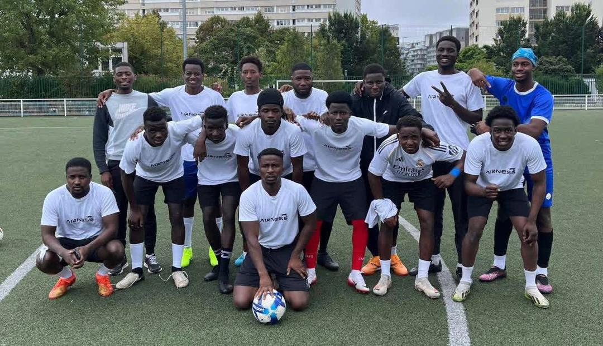
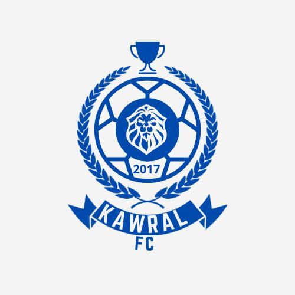
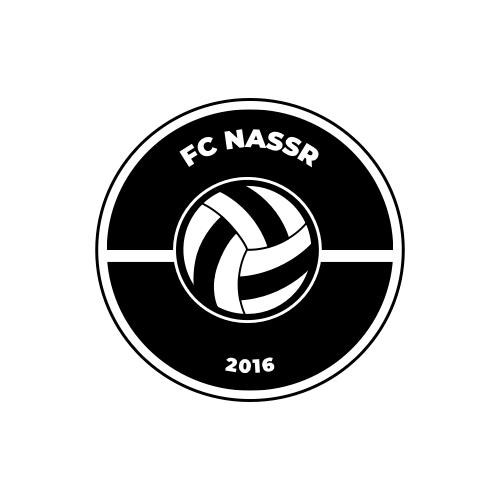

1983-1989 : Premier match Ajar-Tachott, association Fedde
15 premiers écoliers, Yaye Goumbe Soumare, Taba Drame
1994-1998 : Diallo Tandia, premier tournoi Guidimakha
2000-2010 : Tournois à Nouakchott, expansion
2017-2022 : Sadio Diawara, Hamidou Kelly, premier trophée
9 clubs, Walé 3 titres, Dango, Soumpou, Kelifado, Lion d'Ajar
Forage, dispensaire, maison des jeunes, délégations

Une équipe fondée par les jeunes d'Ajar en France pour perpétuer l'esprit du village loin de la terre natale.
L'équipe a été fondée en 2022 par les jeunes d'Ajar résidant en France. Dès sa création, elle a su rassembler la communauté ajaroise autour de valeurs communes : solidarité, partage et fierté des origines.
Papis Sakho, jeune d'Ajar qui a également évolué dans l'équipe d'Ajar à Nouakchott, a pris la présidence de l'équipe en 2024 après avoir été un joueur clé.
Le tournoi KEBE est une compétition qui regroupe tous les villages de la région de KEBE : Ajar, Diaguily, Soomankidy, Leyya, Gussela, et bien d'autres. C'est un moment de retrouvailles et de compétition amicale entre les communautés.


Ces équipes ont marqué l'histoire du football à Ajar avant la création officielle des clubs
Ces noms ont été donnés en hommage aux aînés du village. Ils ont précédé la création des clubs structurés du championnat d'Ajar.
Depuis 1983, ce terrain a vu défiler des générations de joueurs. Des premiers matchs contre Tachott aux exploits du FC Walé (3 titres), il est le cœur battant du football ajarois.
Découvrir son histoire